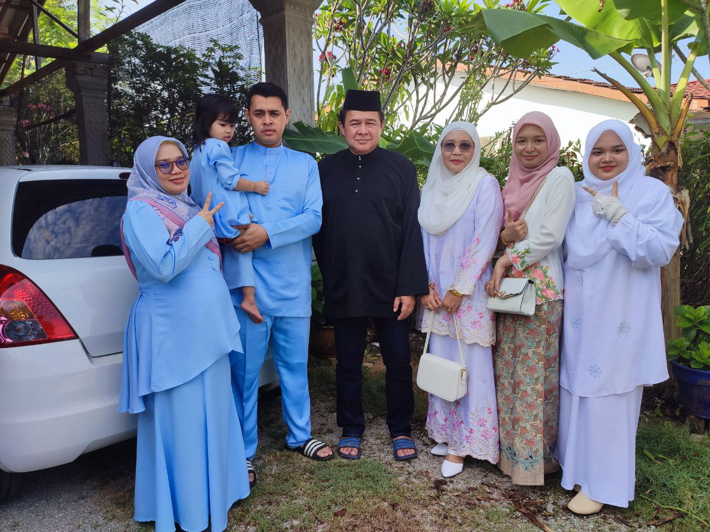
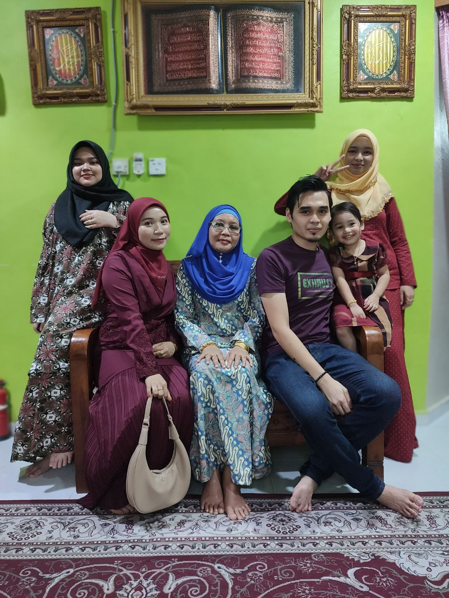
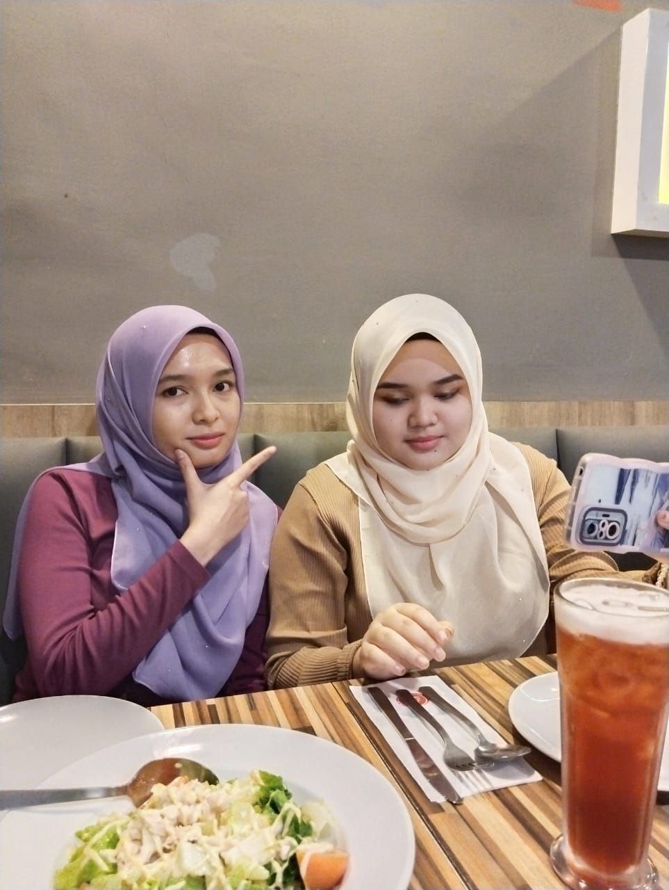
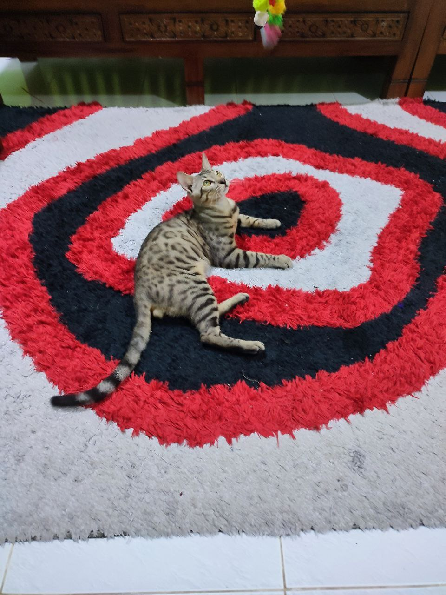

Let's know Mira's Siblings
First Sibling

This is my eldest brother and his little family. His name is Amir Bin Shaifuddin. He is 31 years old this year. I call him Sulung. It might be weird when people heard us calling him that but I wasn't the one who starts to call him as a Sulung. Despite being the oldest siblings. He easily waste his money even now. He also likes to buy modified parts of car and motorcyles.
He has been married for about 4 years now. Already has two childrens by now. Both are girls. My first niece name is Ayra Mikaela and the second one is Adra Maleeqa. His wife name Nur Aini. She is a full time house wife for my brother. She used to work as an accountant but had to resign to follow my brother move to Kuala Lumpur.
Second Sibling

My second brother name is Azmir Affendi.He is 30 years old. Already have a family. For now he only have one children. He and my first brother age gap is only one year old. They are also married in the same year.
My second brother which I call Angah has a daugther that named Al-mahyra Shazia. His wife name is Nur Shadira. Both of my brothers known their partner since high school. My second brother is the opposite of my first one. He is more spoiled towards my mother but also the strict one among our siblings. If the first one like to spend his money, this second one is more careful on spending his money. Regardless of that, this two also shares the same hobby.
Third Sibling

The only my older sister, which is the third siblings. Her name is Amira Fazira. She is 26 years old. She and I are quite close since we are the only female siblings. We share lot of common taste and preference. Instead of calling her Kakak or Kak Lang, she prefer me to call her Kak Long instead.
My sister is working as an accountant, she also just graduate from UiTM. I follow her footsteps a lot including to pursue my studies to this level. Among other siblings only my sister really wants to continue study. After that I also do the same thing my sister did.
We grew very fond of each other. The four of us are quite close but at the end everyone has to leave to find a job, continue studies, to explore the outside world but we still ask about eachothers and hang around if we had the chance.
Adopted Sibling

Of course I couldn't help but putting my pet as my siblings. Let me introduce him again. This is Ren. A bengal cat but not entire pure bengal breed. I've got him after one of my father's friend gave to my father. Actually during that time I was traumatized to have another pet again due to the reason that I have lost Gary. Gary is also my cat. One day he go out and not coming back. I was so sad during that time. I cried a lot. So when receiving Ren. He look almost identical with Gary. It just the different is the pattern of their fur. Gary have thick fur and greyish colour.